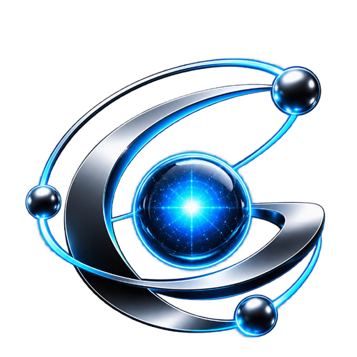

01
Orquestração
Meta-Orchestrator, Compute Governor, Risk-Based Compute e escalada autônoma definem quanto cérebro vale a pena gastar.
control plane
GAU v5 GitHub ↗O GAU v5 transforma o /goal em uma missão adaptativa: roteia modelos, convoca especialistas, preserva memória, testa hipóteses e exige evidência antes de declarar sucesso.
Em vez de entupir todo problema com todos os agentes, o GAU monta a arquitetura cognitiva necessária para cada etapa.
Meta-Orchestrator, Compute Governor, Risk-Based Compute e escalada autônoma definem quanto cérebro vale a pena gastar.
control planeDebates, ensembles, laboratórios de hipótese e diversidade cognitiva atacam problemas por linhas independentes.
reasoning planeProject Brain, Context Compiler, knowledge graphs e checkpoints preservam conhecimento sem congelar fatos antigos.
memory planeCoding Swarm, worktrees e tournaments isolam soluções concorrentes, paralelizam trabalho e integram só o que passa nos gates.
execution planeEvidence Court, Verification Swarm, Regression Hunters e Proof Obligations transformam “acho que foi” em prova rastreável.
verification planeModel, Agent, Skill e Tool Elo alimentam o Self-Evolving Router para melhorar a próxima missão com histórico real.
learning planeUma simulação local do fluxo cognitivo. Ela demonstra roteamento, handoff, memória e verificação sem fingir que está chamando uma sessão real do Antigravity.
Busque por nome, categoria ou função. Cada item abaixo vem da especificação aprovada do GAU v5.
/goal.O GAU entra como camada de coordenação: requisitos primeiro, compute proporcional ao risco, execução isolada, checkpoints cognitivos e conclusão apenas após verificação independente.
Evidence beats vote.
Maioria não apaga uma falha reproduzível.
Stop when proven.
Compute para quando a prova já é suficiente.
History suggests. Evidence decides.
Memória orienta, estado atual manda.
Instalação em um comando mantendo o /goal nativo intacto e ativando as 69 ideias, 16 agentes e a regra Always-On.
iwr -useb https://gau-v5.vercel.app/install.ps1 | iex
curl -fsSL https://gau-v5.vercel.app/install.sh | bash
py -3 .\install.py --project "C:\Projetos\MeuProjeto"
Este site é a interface do projeto. A execução real de subagentes depende do Antigravity e das credenciais disponíveis na máquina onde o GAU for instalado.